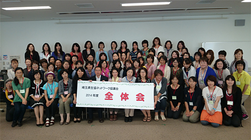
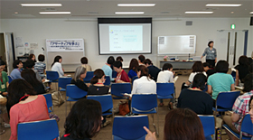
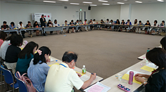

6月30日（月）、浦和コミュニティセンターで今年度協議会の第1回全体会を開催しました。
全体会は二部構成で開かれ、第1部スキルアップ応援講座に77人、第2部「第1回埼玉県生協ネットワーク協議会」に62人が参加しました。
|  |
スキルアップ応援講座「アサーティブを学ぶ」
～自分も相手も尊重するコミュニケーションを一緒に学びました

日常のくらしの一場面を切り取ったロールプレイを織り交ぜながら、相手と向かい合う時の心の持ち方や、自分の思いを相手に伝えるポイントなど、アサーティブなコミュニケーションの取り方を学びました。参加者からは「組合員活動のリーダーとして必要なスキルだと思いました」「コミュニケーションで悩んでいました。活動の中で実践します」などの感想が寄せられました。
第1回埼玉県生協ネットワーク協議会
～2014年度活動計画を共に確認しました

午後からは、新旧委員による2014年度 第1回協議会をおこないました。冒頭、埼玉県生協連の岩岡会長理事から、あいさつと消費者課題の現状、地域消費者団体とのつながりづくりに関する報告をいただきました。その後、2014年度のスタートにあたり、協議会のめざすもの、設置要綱の説明を会長の滝澤さんがおこない、「広く地域の中でつながりあうために」を基調とした2014年度活動計画を確認しました。
また、第1回協議会では、各生協より選出された運営委員の報告をおこない、あわせて、第50回埼玉県消費者大会の運営に関わる協議会メンバー（3名）をコープみらいから選出することを確認しました。
2014年度最初となった今回の協議会では、第1部アサーティブトレーニング講座で、相手の権利を侵害することなく、誠実に、率直に、対等に伝えることの大切さを学び、組合員リーダーとしてコミュニケーションスキルを考えるきっかけをつくることができました。また、第1回協議会では、生協ネットワーク協議会のめざすもの・協議会設置要綱をもとに協議会の役割について説明をおこない、2014年度の活動の方向性を確認することができた集いとなりました。